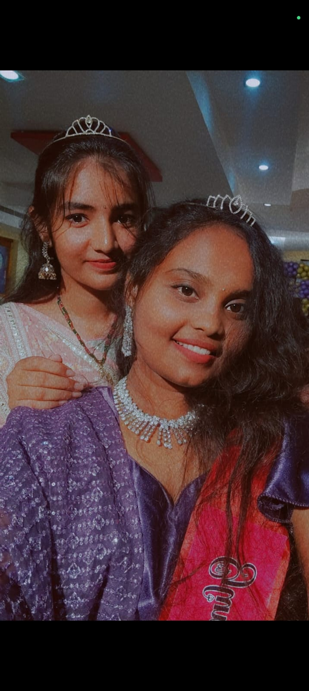
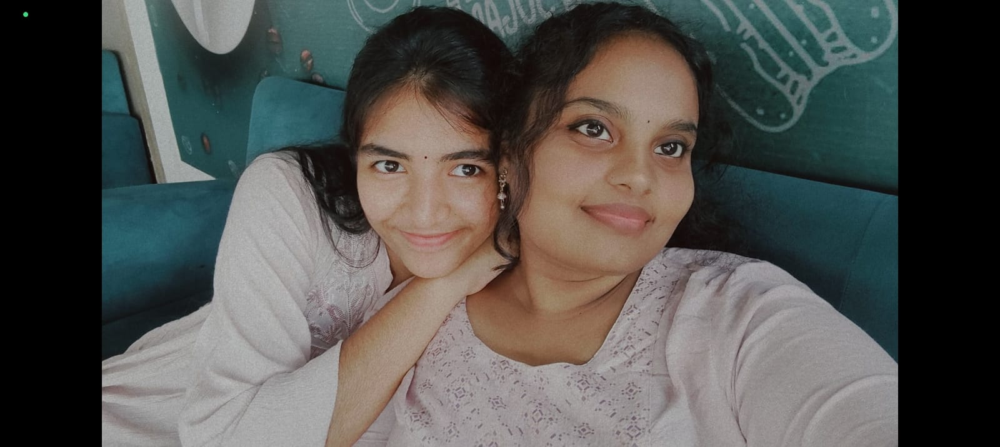

01 / 05
the girl behind these pages
This is Pranu.
My closest friend.
The person who somehow knows about all
the random things happening in my life.
basically... my personal diary,
but with a face. ♡
02 / 05
one of my favourite pages
us.
One picture, one memory,
and somehow a whole lot of things
I could write here.
I'm keeping some of them to myself though. :)
03 / 05
little pieces of us

another little memory ♡

keeping this one here :)
Some moments don't need
a long explanation.
04 / 05
things I don't say enough
You make ordinary days
feel a little less ordinary.
I can tell you the most random
things and somehow you still listen.
You're one of those people
I'm genuinely grateful I met.
And yes, you're stuck with me.
Unfortunately. ♡
05 / 05
♡
Happy Birthday,
Pranu
I hope this year brings you
the kind of happiness that stays
a little longer than expected.
I hope you get all the little things
you wish for, the big things you're
scared to wish for, and plenty of
reasons to laugh until your stomach hurts.
Thank you for being the person
I can tell things to, the person
I can be completely random with,
and most importantly...
my personal diary. ♡
Stay exactly as cute, weird
and wonderful as you are.
— from someone who's very lucky
to have you
✦ ♡ ✦